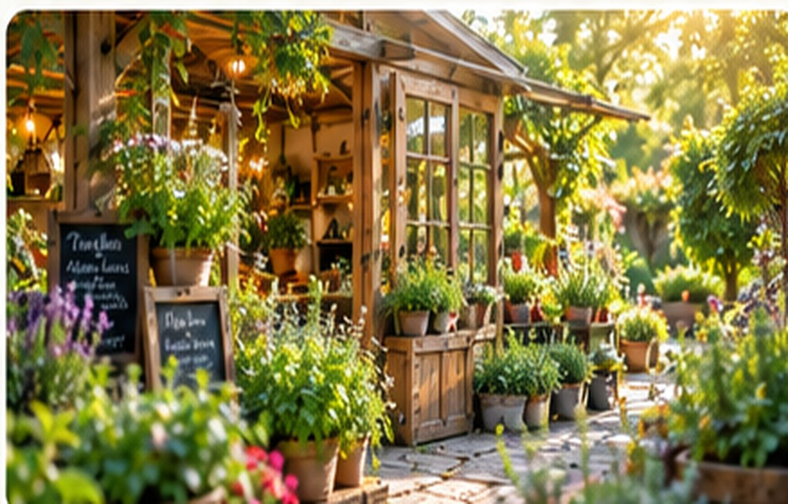

Herbs You Can Smell,
Taste & Grow
Discover the beauty, benefits, and uses of herbs for a healthier and more natural lifestyle.
Explore Herbs
Rooted in nature 🌿About This Little Garden
The Little Herb Garden celebrates the everyday beauty of fragrant leaves, fresh ingredients and thoughtful growing. It is a place to discover the herbs that bring color, aroma and inspiration into our kitchens and gardens.
Our purpose is to make herbal knowledge approachable: from nurturing plants with organic-minded care to understanding their traditional uses and enjoying their scents. Explore the garden digitally, discover each herb's story and take inspiration for your own green space.
What Grows Here
Loading herbs…
Visit My Garden
Take a look around and enjoy some moments from the garden.
Photo examples from independent gardens and botanical sources; these do not depict one verified physical garden. External images require an internet connection.